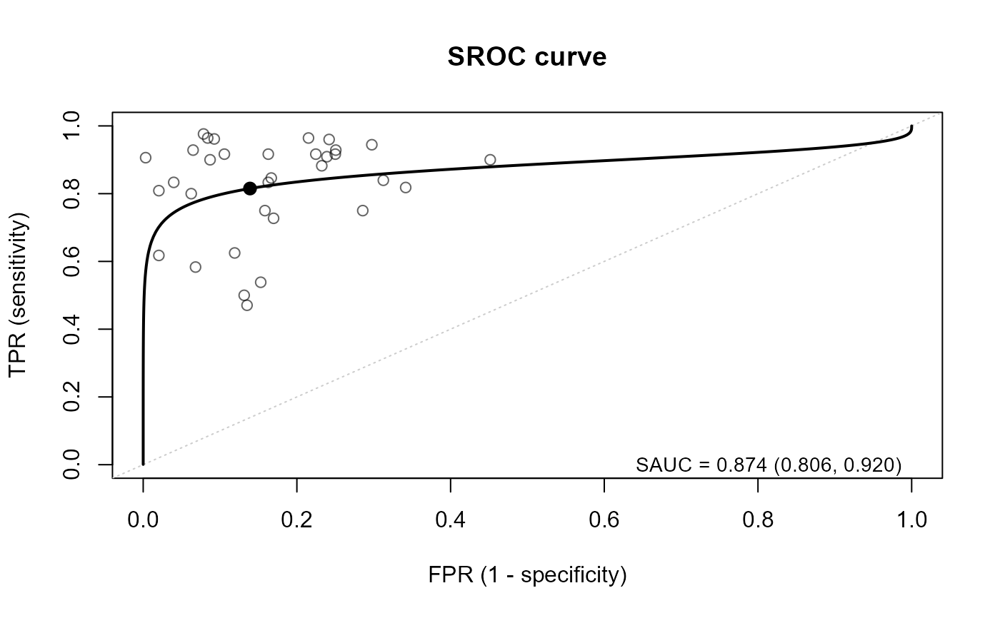

Plot the SROC curves
plot.sroc.RdPlot method for objects of class "sroc" returned by
reitsma.sroc (one SROC curve) and hattori.tsroc
(one time-dependent SROC curve for each time point).
For the output of hattori.tsroc, the curves of the time points are drawn
one per page by default; in an interactive session the user is prompted
("Hit <Return> to see next plot") before each new page.
Alternatively, all the time points can be overlaid in one panel (overlay = TRUE).
Usage
# S3 method for class 'sroc'
plot(
x,
time = NULL,
time.index = FALSE,
overlay = FALSE,
ask = NULL,
add.spoint = TRUE,
spoint.region = FALSE,
plot.ci = FALSE,
ci.level = 0.95,
add.study = FALSE,
study.size = c("fixed", "precision"),
study.pch = 1,
study.cex = 1,
study.col = NULL,
add.sauc = TRUE,
legend.pos = "bottomright",
sroc.cols = NULL,
sroc.lty = 1,
sroc.lwd = 2,
ci.lty = 2,
ci.lwd = 1,
sp.pch = 19,
sp.cex = 1.2,
xlab = "FPR (1 - specificity)",
ylab = "TPR (sensitivity)",
main = NULL,
addon = FALSE,
n.grid = 300,
...
)Arguments
- x
An object of class
"sroc"fromreitsma.srocorhattori.tsroc.- time
Time points to plot (only for
hattori.tsrocresults). Either numeric values of the time points (e.g.,c(24, 60)) or integer indices whentime.index = TRUE. DefaultNULLplots all the time points.- time.index
Logical; if
TRUE,timeis interpreted as the positions of the time points.- overlay
Logical; if
TRUE, all the selected time points are drawn in one panel.- ask
Logical; whether to wait for <Return> before each new page. Default
NULLmeansTRUEwhen more than one page is drawn on an interactive device.- add.spoint
Logical; whether to add the summary operating point.
- spoint.region
Logical; whether to add the confidence region of the summary point (an ellipse on the logit scale, back-transformed).
- plot.ci
Logical; whether to add pointwise confidence bands of the SROC curve (delta method using
var.ml).- ci.level
Confidence level of the bands and the region. Default 0.95.
- add.study
Logical; whether to add the observed studies (\((1 - \mathrm{spec}_i, \mathrm{sens}_i)\), after continuity correction) stored in the
dataelement of the fit.- study.size
Size of the study points:
"fixed"(default) or"precision", proportional to \(1/\sqrt{v_1 + v_2}\) relative to its mean.- study.pch, study.cex
Symbol and (base) size of the study points.
- study.col
Color of the study points. Default
NULLuses the curve color, semi-transparent.- add.sauc
Logical; whether to show the SAUC (and its CI) in a legend.
- legend.pos
Position of the legend (see
legend).- sroc.cols
Color(s) of the SROC curves. Recycled over time points when
overlay = TRUE.- sroc.lty, sroc.lwd
Line type and width of the SROC curves.
- ci.lty, ci.lwd
Line type and width of the confidence bands.
- sp.pch, sp.cex
Symbol and size of the summary points.
- xlab, ylab
Axis labels.
- main
Main title. Default
NULLgives an automatic title (with the time point).- addon
Logical; if
TRUE, add to the current plot instead of starting a new one (only when one panel is drawn).- n.grid
Number of grid points to draw each curve.
- ...
Other graphical arguments passed to
plot.default.
Value
Invisibly, a list (one element per drawn fit) of data frames with the
curve coordinates (fpr, tpr, and lb, ub when plot.ci = TRUE).
Examples
data(IVD)
fit1 <- reitsma.sroc(TP = TP, FN = FN, FP = FP, TN = TN, data = IVD)
plot(fit1, plot.ci = TRUE, spoint.region = TRUE)
 plot(fit1, add.study = TRUE) # add the studies
plot(fit1, add.study = TRUE) # add the studies

plot(fit1, add.study = TRUE, study.size = "precision") # point size by precision
if (FALSE) { # \dontrun{
## fit2 <- hattori.tsroc(...) # see ?hattori.tsroc
plot(fit2) # one page per time point, <Return> for next
plot(fit2, time = 36) # a single time point
plot(fit2, overlay = TRUE) # all time points in one panel
} # }